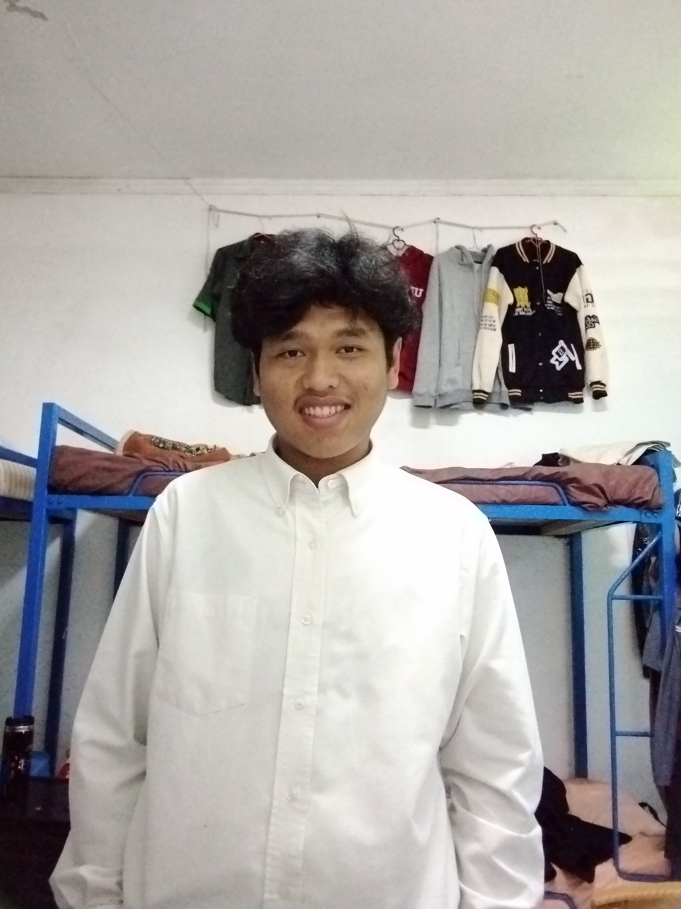

Biodata Saya
Informasi Pribadi
- Nama: Jordan Marpaung
- Nomor Induk Mahasiswa (NIM): 2381025
- Fakultas: Teknik Informatika
- Hobi: Membaca, Bermain Musik, dan Menonton Film
- Keterampilan: HTML, CSS, JavaScript, dan Pemrograman Java
Testimonial
Selama mengikuti kelas Pengembangan Web, saya belajar banyak hal menarik, seperti bagaimana membuat halaman web yang responsif dan menarik. Salah satu pengalaman berharga saya adalah mempelajari cara mengimplementasikan CSS untuk mengatur tata letak dengan lebih efisien, meskipun pada awalnya tampak rumit. Pengalaman ini membuat saya lebih percaya diri dalam membangun proyek web.